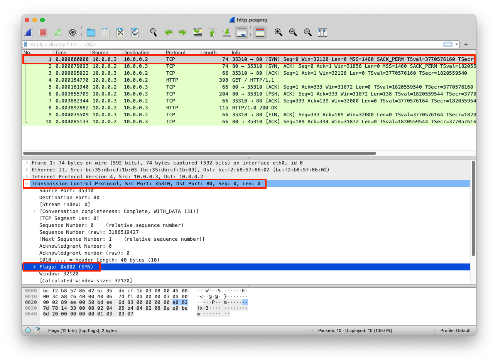
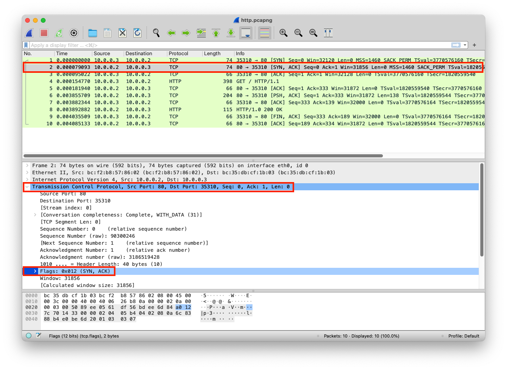
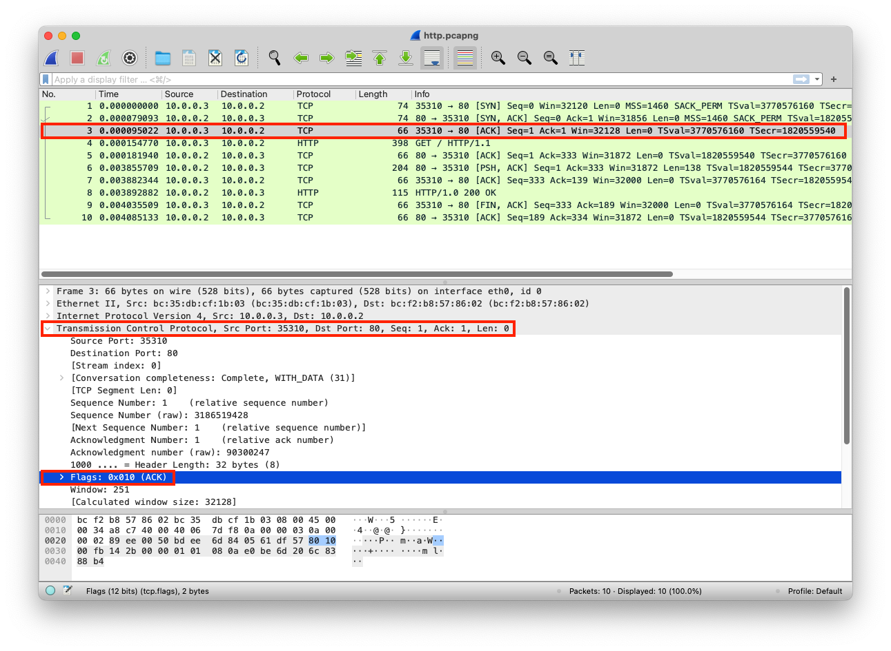

A layer that manages the transmission of data between node. It creates Transmission Control Protocol (TCP) or User Datagram Protocol (UDP) connections between nodes. Those protocols use ports for sending and receiving data from and to an application. The ports are assigned to processes using unique port numbers. The source port number has the port number of the sending application. The destination port has the port number of the receiving application. The source and destination ports are added to the segment.
A connection-based that allows processes to send data via a network and verify if it's delivered or not. The process must connect via a three-way handshake before sending and receiving data
A message-oriented that allows processes to send data via a network without verifying if it's delivered. It does not establish a connection before sending data
*Note, UDP does have error checking but doesn't have any error-recovery
A virtual connection point within an operating system that is assigned to a specific service and is used for sending and receiving data. Ports have a 16-bit logical address (0 to 65536). Ports under 1024 are called privileged ports and require elevated privileges to run services on them like webservers (This is defined differently based on the operating system)
There are multiple ways to review the ports used by the services in the operating systems, you can use netstat or lsof command to show all the listening ports. If you run the customized webserver example, you will see that port 80 is used by it as the following
pc@mac~% sudolsof -i -P -n | grep -E "(LISTEN)"
Python 1544 www 3u IPv4 0x0 0t0 TCP *:80 (LISTEN)
The web server is listening on port 80. The client can connect to this web server using the network adapter IP, but they do not need to specify pot 80 in the web browser because it uses the protocol prefix HTTP. If the web server port is 6789, the client can do http://<Network_Adapter_IP>:6789
from http.server import SimpleHTTPRequestHandler
from socketserver import TCPServer
from io import BytesIO
from gzip import GzipFile
from datetime import datetime
from contextlib import suppress
with suppress(Exception):
from netifaces import gateways, ifaddresses, AF_INET, AF_LINK
print("The default network interface is: ",gateways()['default'][AF_INET][1])
print("The default network interface mac address is: ",ifaddresses(gateways()['default'][AF_INET][1])[AF_LINK])
class Server(SimpleHTTPRequestHandler):
def do_GET(self):
compressed = False
content = b'<HTML><h1>Hello World!</h1></HTML>'
if len(content) > 0:
if 'accept-encoding' in self.headers:
if 'gzip' in self.headers['accept-encoding']:
bytes_ = BytesIO()
with GzipFile(fileobj=bytes_, mode='w', compresslevel=5) as f:
f.write(content)
f.close()
content = bytes_.getvalue()
compressed = True
self.send_response(200)
if compressed:
self.send_header('content-encoding', 'gzip')
self.send_header('content-length', len(content))
self.end_headers()
self.wfile.write(content)
def log_message(self, format, *args):
print("[{}] - {}:{} - {} {}".format(datetime.now().strftime("%m/%d/%Y %H:%M:%S"), self.client_address[0],self.client_address[1],args[0],args[1]))
TCPServer(('0.0.0.0', 80), Server).serve_forever()
The client sends Synchronize Sequence Number (SYN) request
| Layer | Protocol | PDU | Info | Ports | IPs | MACs |
| Transport Layer | TCP | Segments | 3 Way handshake Process (SYN) | Src Port: 35310 Dst Port: 80 |
||
| Network Layer | IP | Packets | 3 Way handshake Process (SYN) | Src Port: 35310 Dst Port: 80 |
Src IP: 10.0.0.3 Dst IP: 10.0.0.2 |
|
| Data Link Layer | Ethernet | Frames | 3 Way handshake Process (SYN) | Src Port: 35310 Dst Port: 80 |
Src IP: 10.0.0.3 Dst IP: 10.0.0.2 |
Src MAC: bc:35:db:cf:1b:03 |
| Physical Layer | Coax | Bits | 01001000 01010100 01010100 | 01001000 01010100 | 01001000 01010100 | 01001000 01010100 |

The server receives the SYN request
| Layer | Protocol | PDU | Info | Ports | IPs | MACs |
| Physical Layer | Coax | Bits | 01001000 01010100 01010100 | 01001000 01010100 | 01001000 01010100 | 01001000 01010100 |
| Data Link Layer | Ethernet | Frames | 3-Way handshake Process (SYN) | Src Port: 35310 Dst Port: 80 |
Src IP: 10.0.0.3 Dst IP: 10.0.0.2 |
Src MAC: bc:35:db:cf:1b:03 |
| Network Layer | IP | Packets | 3-Way handshake Process (SYN) | Src Port: 35310 Dst Port: 80 |
Src IP: 10.0.0.3 Dst IP: 10.0.0.2 |
|
| Transport Layer | TCP | Segments | 3-Way handshake Process (SYN) | Src Port: 35310 Dst Port: 80 |
The server responds with Acknowledgement Sequence Number (SYN/ACK)
| Layer | Protocol | PDU | Info | Ports | IPs | MACs |
| Transport Layer | TCP | Segments | 3-Way handshake Process (SYN/ACK) | Src Port: 80 Dst Port: 35310 |
||
| Network Layer | IP | Packets | 3-Way handshake Process (SYN/ACK) | Src Port: 80 Dst Port: 35310 |
Src IP: 10.0.0.2 Dst IP: 10.0.0.3 |
|
| Data Link Layer | Ethernet | Frames | 3-Way handshake Process (SYN/ACK) | Src Port: 80 Dst Port: 35310 |
Src IP: 10.0.0.2 Dst IP: 10.0.0.3 |
Src MAC: bc:f2:b8:57:86:02 Dst MAC: bc:35:db:cf:1b:03 |
| Physical Layer | Coax | Bits | 01001000 01010100 01010101 | 01001000 01010100 | 01001000 01010100 |
01001000 01010100 |

The client receives the SYN/ACK request
| Layer | Protocol | PDU | Info | Ports | IPs | MACs |
| Physical Layer | Coax | Bits | 01001000 01010100 01010101 | 01001000 01010100 | 01001000 01010100 | 01001000 01010100 |
| Data Link Layer | Ethernet | Frames | 3-Way handshake Process (SYN/ACK) | Src Port: 80 Dst Port: 35310 |
Src IP: 10.0.0.2 Dst IP: 10.0.0.3 |
Src MAC: bc:f2:b8:57:86:02 |
| Network Layer | IP | Packets | 3-Way handshake Process (SYN/ACK) | Src Port: 80 Dst Port: 35310 |
Src IP: 10.0.0.2 Dst IP: 10.0.0.3 |
|
| Transport Layer | TCP | Segments | 3-Way handshake Process (SYN/ACK) | Src Port: 80 Dst Port: 35310 |
The client sends the ACK
| Layer | Protocol | PDU | Info | Ports | IPs | MACs |
| Transport Layer | TCP | Segments | 3-Way handshake Process (ACK) | Src Port: 35310 Dst Port: 80 |
||
| Network Layer | IP | Packets | 3-Way handshake Process (ACK) | Src Port: 35310 Dst Port: 80 |
Src IP: 10.0.0.3 Dst IP: 10.0.0.2 |
|
| Data Link Layer | Ethernet | Frames | 3-Way handshake Process (ACK) | Src Port: 35310 Dst Port: 80 |
Src IP: 10.0.0.3 Dst IP: 10.0.0.2 |
Src MAC: bc:35:db:cf:1b:03 Dst MAC: bc:f2:b8:57:86:02 |
| Physical Layer | Coax | Bits | 01001000 01010100 01010111 | 01001000 01010100 | 01001000 01010100 |
01001000 01010100 |

The server receives ACK request
| Layer | Protocol | PDU | Info | Ports | IPs | MACs |
| Physical Layer | Coax | Bits | 01001000 01010100 01010111 | 01001000 01010100 | 01001000 01010100 | 01001000 01010100 |
| Data Link Layer | Ethernet | Frames | 3-Way handshake Process (SYN/ACK) | Src Port: 35310 Dst Port: 80 |
Src IP: 10.0.0.3 Dst IP: 10.0.0.2 |
Src MAC: bc:35:db:cf:1b:03 |
| Network Layer | IP | Packets | 3-Way handshake Process (SYN/ACK) | Src Port: 35310 Dst Port: 80 |
Src IP: 10.0.0.3 Dst IP: 10.0.0.2 |
|
| Transport Layer | TCP | Segments | 3-Way handshake Process (SYN/ACK) | Src Port: 35310 Dst Port: 80 |